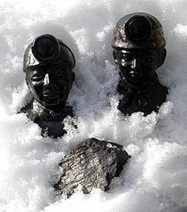
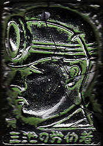
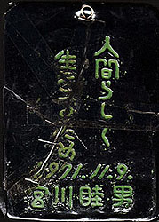

<!DOCTYPE HTML PUBLIC "-//W3C//DTD HTML 4.01 Transitional//EN">
<HTML>
<HEAD>
<META http-equiv="Content-Type" content="text/html>
<META http-equiv="Content-Style-Type" content="text/css" media="all">
<TITLE>みいけ展示室</TITLE>
</HEAD>
<BODY>

<BLOCKQUOTE>
<TABLE>
  <TBODY>
    <TR>
      <TD width="516">
      <P class="MsoNormal" style="text-indent:71.65pt;mso-char-indent-count:4.92"><B style="mso-bidi-font-weight:normal"><FONT color="red" size="+1">展示品１　石炭人形</FONT><SPAN lang="EN-US" style="font-size:16.0pt;
mso-font-width:90%"></SPAN></B><BR>
      </P>
      <TABLE>
        <TBODY>
          <TR>
            <TD width="91"></TD>
            <TD width="404">　　　
            </TD>
          </TR>
        </TBODY>
      </TABLE>
      <p class=MsoNormal style='text-indent:11.0pt;mso-char-indent-count:1.0;
line-height:17.0pt;mso-line-height-rule:exactly'><FONT face="MS UI Gothic">二体の石炭人形。その一方のヘルメットには「三本線」がある。
「黒く塗った坑内帽にクッキリと白線3本、（中略）これが闘争中の鉢巻に変わった三池の労働者を象徴するものであった。この三本線はフランス革命の
スローガン『自由・平等・博愛』になぞらえて、『団結・抵抗・統一』を意味するものとして、三池労組の長期抵抗路線のシンボルとなった。（中略）
就労にあたり、三池労組員と第二組合員とを坑内でもわかるように白の3本線がつくられた。（中略）白線の幅7ミリ、白線と白線の間隔も7ミリと統一
された」（みいけ二十年　三池炭鉱労働組合編）。
<spanlang=EN-US style='font-size:11.0pt'></span><BR>
　その「三本線」がある石炭人形の底側には「贈物・記念品専門店『むとう』　大牟田市民館前」というシールが貼付されてある。<BR>
　「石炭人形は、昭和30年代、大牟田市工芸指導所が特産品の一つとして考案したのが始まり。石炭くずであるピッチを溶かし型に流し固めた後、色を
塗って出来上がり。しかし、ピッチを溶かすときの臭いがひどいため、作る人が育たなかった。同人形の最後の作り手は、2001年2月に91歳で亡くなった
河村実子さんでした」（大牟田市石炭産業科学館）。<BR>
　三池炭鉱を定年退職する人などに、記念として同僚から贈られたりしたという。現在は販売されておらず、ＪＲ大牟田駅前にある観光案内所等に飾られ
てあるのみ。
</FONT></p>
      </TD>
    </TR>
  </TBODY>
</TABLE>
</BLOCKQUOTE>

<BLOCKQUOTE>
<TABLE>
  <TBODY>
    <TR>
      <TD width="516">
      <P class="MsoNormal" style="text-indent:71.65pt;mso-char-indent-count:4.92"><B style="mso-bidi-font-weight:normal"><FONT color="red" size="+1">展示品２　レリーフ式石炭人形</FONT><SPAN lang="EN-US" style="font-size:16.0pt;
mso-font-width:90%"></SPAN></B><BR>
      </P>
      <TABLE>
        <TBODY>
          <TR>
            <TD width="91"></TD>　<TD width="91"></TD>
            <TD width="404">
            </TD>
          </TR>
        </TBODY>
      </TABLE>
      <p class=MsoNormal style='text-indent:11.0pt;mso-char-indent-count:1.0;
line-height:17.0pt;mso-line-height-rule:exactly'><FONT face="MS UI Gothic">紙箱付き。その箱には「大牟田特産 石炭人形」と記されてある。
箱の中には「石炭人形について」という説明書があり、「（中略）この石炭人形民芸品は良質な三池炭等を原料とし特殊な方法と技術を加えて生産する
ものでその製品は他に類のない本邦唯一の郷土色豊かな特産品で観光記念品・土産品・ギフトとしてひろく御好評をいただいております。　総発売元　
大牟田市有明町（市民館前）　武藤商事」と記載してある。
<spanlang=EN-US style='font-size:11.0pt'></span><BR>
　レリーフの裏側に刻印されてある「11月9日」とは、1963年戦後最大の炭鉱事故と言われた三井三池三川鉱炭塵大爆発が起きた日を示している。「宮川睦男」
とは長く三池炭鉱労働組合の組合長を務めた人。1979年3月、62歳で病死。その宮川組合長が当時の三池ＣＯ闘争（炭塵爆発により生じた一酸化炭素中毒
患者の人権を守る闘争）支援者に贈った記念品と思われる。ＣＯ闘争は、まさしく「人間らしく　生きるため」の闘いだった。今もその闘いは続いている。<BR>
　なお、同レリーフ式石炭人形は神戸の片岡古書店に持ち込まれたもの。
</FONT></p>
      </TD>
    </TR>
  </TBODY>
</TABLE>
</BLOCKQUOTE>

</BODY>
</HTML>